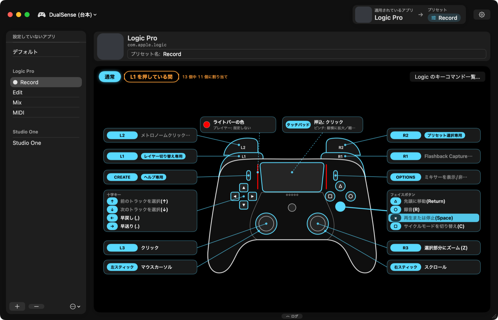
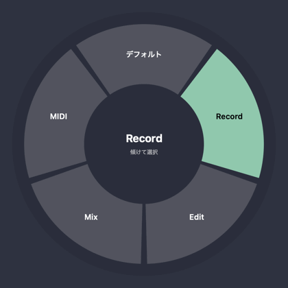
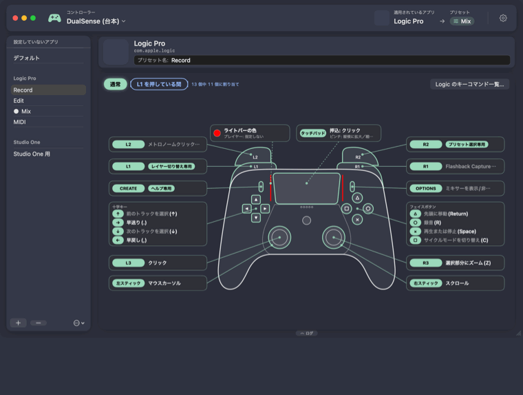

DaruGoro
Control your DAW from the sofa — with a PS5 DualSense controller.
ソファでゴロゴロしながら、PS5コントローラーでDAWを操作するMacアプリ。
Free · macOS 12 or later · 無料 · macOS 12 以降

English
What it does
DaruGoro turns a PS5 (DualSense) controller into a controller for your DAW on Mac. Press a button and DaruGoro sends the keyboard shortcut you assigned for the app in front — Logic Pro or Studio One — so you can play, record, edit and mix without sitting at your desk.
- Presets per DAWReady-made presets for Logic Pro and Studio One. Edit, reorder, export and import them freely.
- Switch presets with R2Hold R2 and tilt the right stick to pick a preset from a circular menu.
- L1 editing layerWhile L1 is held, the face buttons and D-pad switch to editing actions.
- Sticks, your wayUse each stick as a D-pad, scroll wheel, mouse cursor or arrow keys.
- Touchpad mouseMove, click and drag with the controller's touchpad.
- On-screen helpPress CREATE to see every assignment drawn around the controller.



Requirements
- macOS 12 Monterey or later
- A PS5 DualSense wireless controller (Bluetooth or USB)
- Logic Pro or Studio One (other apps work with the “Default” preset)
Download
DaruGoro is free. The app is signed with a Developer ID and notarized by Apple.
Download DaruGoro (.dmg)Release notes and older versions are on GitHub Releases.
First launch
- Connect the controller. Hold the PS button and the CREATE button together until the light bar flashes, then connect “DualSense Wireless Controller” in System Settings › Bluetooth. A USB cable also works.
- Open DaruGoro and allow Accessibility access when asked: System Settings › Privacy & Security › Accessibility, then turn on DaruGoro. This is needed to send keys to your DAW.
- Bring your DAW to the front. When the top of the DaruGoro window shows your DAW and a preset, you are ready.
- Press a button. The assigned shortcut is sent to the DAW. Press CREATE any time to see what each button does.
Say thanks
If DaruGoro helps your music, you can leave a small thank-you. It is completely optional — no reply or reward is promised.
Say thanks on Ko-fiTrademarks
DualSense, PlayStation and PS5 are trademarks or registered trademarks of Sony Interactive Entertainment Inc., and Logic Pro is a trademark or registered trademark of Apple Inc. DaruGoro is not affiliated with, nor endorsed by, these companies.
日本語
できること
DaruGoro（だるごろ）は、PS5（DualSense）コントローラーを Mac の DAW コントローラーにするアプリです。ボタンを押すと、前面にある DAW（Logic Pro / Studio One）に合わせて割り当てたキーボードショートカットを送ります。デスクに向かわず、ソファでくつろいだまま、再生・録音・編集・ミックスができます。
- DAW ごとのプリセットLogic Pro と Studio One のプリセットを用意。編集・並べ替え・書き出し・読み込みが自由にできます。
- R2 でプリセットを切り替えR2 を引いたまま右スティックを倒すと、円形のメニューからプリセットを選べます。
- L1 の編集レイヤーL1 を押している間、顔ボタンと十字キーが編集用の操作に切り替わります。
- スティックを好きな役割に十字キー・スクロール・マウスカーソル・矢印キーから選べます。
- タッチパッドでマウス操作コントローラーのタッチパッドで、移動・クリック・ドラッグができます。
- 操作ヘルプCREATE ボタンで、全部の割り当てをコントローラーの絵の周りに表示します。
動作環境
- macOS 12 Monterey 以降
- PS5 DualSense ワイヤレスコントローラー（Bluetooth または USB）
- Logic Pro または Studio One（その他のアプリは「デフォルト」のプリセットで動きます）
ダウンロード
DaruGoro は無料です。Developer ID で署名し、Apple の公証を受けています。
DaruGoro をダウンロード（.dmg）更新内容と過去の版は GitHub Releases にあります。
はじめて使うとき
- コントローラーをつなぐ。PS ボタンと CREATE ボタンを同時に長押しし、ライトバーが点滅したら、システム設定 › Bluetooth で「DualSense Wireless Controller」に接続します。USB ケーブルでもつなげます。
- DaruGoro を開き、たずねられたらアクセシビリティを許可します。システム設定 › プライバシーとセキュリティ › アクセシビリティ で DaruGoro をオンにします。DAW にキーを送るために必要です。
- DAW を前面にする。DaruGoro のウインドウの上に、DAW の名前とプリセットが出れば準備完了です。
- ボタンを押す。割り当てたショートカットが DAW に送られます。CREATE ボタンで、いつでも割り当てを確かめられます。
お礼について
DaruGoro が役に立ったら、お礼を送っていただけます。任意です。返信や返礼はお約束していません。
Ko-fi でお礼を送る商標について
DualSense、PlayStation および PS5 は Sony Interactive Entertainment Inc. の、Logic Pro は Apple Inc. の商標または登録商標です。DaruGoro はこれらの企業と提携しておらず、承認も受けていません。